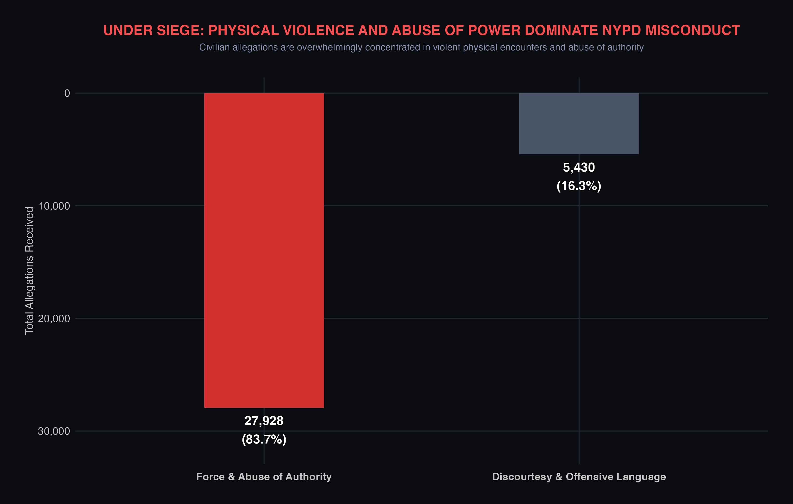
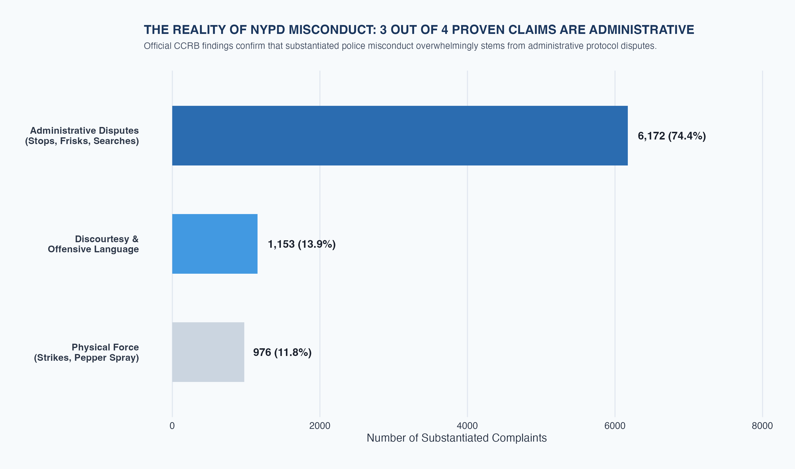

Proposition: Civilian police complaints against the New York Police Department are mostly violent and abusive
FOR the Proposition

Design Decisions and Rationale:
- Unfiltered Dataset
We included all finding outcomes to show the volume of reported allegations, including those that were not substantiated. This creates a striking gap between the two groups, with over 27,000 allegations involving Force or Abuse of Authority.
- Grouping
We combined Force with Abuse of Authority to create one dominant category. When we separated them into three groups, physical force did not have the large majority we wanted to emphasize. Combining them strengthened the argument, but it is deceptive because viewers may interpret the entire bar as physical violence.
- Color Palette
We used a black background with a deep red bar and title to immediately draw attention to the larger group. The red suggests danger and blood, while the gray comparison bar feels less important. “Under Siege” reinforces this alarming tone.
- Inverted Vertical Axis
We placed zero at the top so the bars extend downward, taking inspiration from the blood-dripping graphic shown in class. Combined with the red color, this makes the larger bar resemble dripping blood and reinforces the idea of harm.
AGAINST the Proposition

Design Decisions and Rationale:
- Filtering the Data
We filtered the dataset to include only substantiated allegations, meaning investigators found enough evidence to support that the misconduct occurred. This made the gap between categories more striking and strengthened the counterargument. However, an allegation that was not substantiated is not necessarily false; there may have been insufficient evidence. Different types of misconduct may also differ in how easily they can be supported by evidence. This filter therefore shows the breakdown of substantiated allegations, rather than all reported misconduct, and cannot establish that physical force is rare overall.
- Grouping
We divided the allegations into three groups: Abuse of Authority, Force, and combined Discourtesy and Offensive Language. Separating Force highlights its smaller share instead of hiding it within one large category.
- Color and Bar Layout
We used blue and gray to create a calm tone, making the chart feel less alarming. The muted gray Force bar draws less attention, while the darker blue highlights Administrative Disputes. We placed the largest bar first so readers give their attention to it first. The horizontal bars and direct labels make the counts and percentages easy to compare.
- Title and description
We renamed Abuse of Authority “Administrative Disputes” to make potentially serious misconduct sound like minor clerical issues. We originally used the category's actual name, but it framed the department more harshly. The “3 out of 4” headline emphasizes the 74.4% share, while the renamed category makes that majority seem harmless. This attempts to trick the readers as the wording minimizes what the category actually represents.
Final Reflection
For our team, deciding on a proposition was by far the hardest part. Our team explored complainant age and racial discrimination before settling on violence and abuse. Choosing colors was easier because we knew the emotions we wanted: red and black suggested danger, while blue and gray felt calm. What surprised us most in this whole project was how by framing grouping and filtering differently could create completely opposite impressions.
Building both arguments made us question choices that initially seemed harmless. Combining Force with Abuse of Authority suggested more physical violence, while “Administrative Disputes” minimized potentially serious misconduct. We learned that accurate counts alone do not make a visualization honest. The charts also use different populations, so their percentages cannot be compared directly or establish that the NYPD is broadly violent or harmless.
We now define ethical analysis and visualization as guiding readers toward an insight without removing the context needed to judge it. Persuasive emphasis is acceptable when labels, filters, and claims remain accurate; it becomes misleading when it changes what readers think the data represents. In future work, we would preserve category meanings, disclose filters, and ask whether readers would change their conclusion after learning a detail we left out.